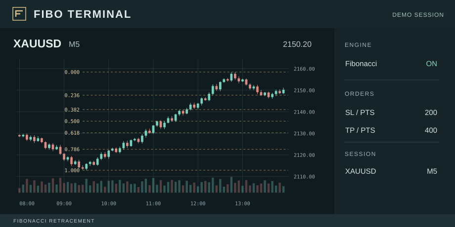

차트와 주문 설정을 한 화면에
봉 차트 옆에 엔진, 주문, 세션 패널을 배치했습니다. 금 시세가 고점과 저점 사이 어디에 있는지 읽으면서 손절·익절 거리도 함께 확인할 수 있는 구성입니다.
화면에서 확인할 수 있는 것
피보나치 표시를 끄면 캔들과 거래량만 남습니다. 다시 켜면 0.382, 0.500, 0.618 등 되돌림선이 나타납니다. 주문 패널에서 손절·익절 포인트를 바꾸면 예시 매수가를 기준으로 두 가격이 다시 계산됩니다.
기존 FIBO TERMINAL 화면 시안을 바탕으로 재구성한 포트폴리오 데모입니다. 고정된 예시 시세를 사용하며 주문은 전송하지 않습니다.
다음 프로젝트 Partner Trade →